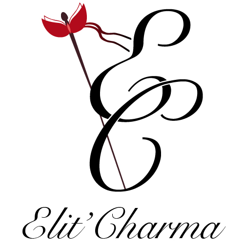

Elit-Charma
Logo créé dans le cadre de mon stage chez Pépé Studio.

J'ai réalisé sur Illustrator ce logo pour une cliente
qui lance sa marque de lingerie en ligne.


Pour montrer l'élégance d'une marque de lingerie, j'ai choisi de combiner la noblesse représenté par l'épée d'escrime et le raffinement par la typographie des 2 initiales.
Vous pourrez notez que la garde de l'épée rappelle l'univers de la lingerie.
